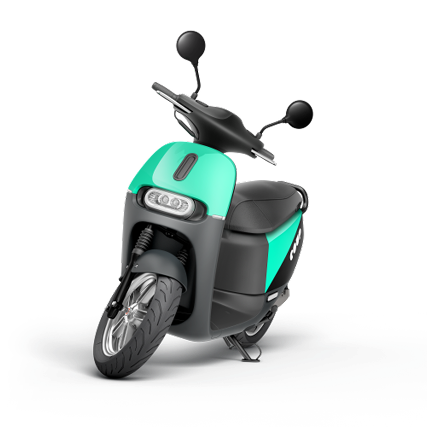

Scooter downtimeKeeping more scooters on the road through faster maintenance and repairs.
01
Making the ride feel as good


One in eight rides was

The consumer ride app
Making the ride feel as good
as the scooters.
The old app worked. Riders could find a scooter, unlock it, and end a ride. But it was purely transactional. It removed friction without adding confidence or enjoyment, and for a product built around the feeling of riding an electric moped through a city, that felt like a missed opportunity.
The redesign started with a simple question: how should this experience feel to use? Not which features to add, but what riders needed to feel. Across interviews in all three cities, one theme came through consistently: confidence. Riders wanted to know they had chosen the right scooter, understood what was happening, and were always in control. Every design decision followed from that.
I redesigned the entire ride experience: discovery and maps, scooter selection, reservations, pre-ride checks, the ride itself, and trip completion. The details mattered most: what information appeared at each moment, how prompts were timed, and how interactions built trust.
Reliability was the other half of the problem. Bluetooth connections between the app and the scooter could fail, unlock attempts could break down, and errors were not always handled in a way that helped riders recover quickly. Experienced users learned the quirks over time, but for new riders the journey could feel unpredictable. I mapped the moments that caused hesitation, confusion or failure, then focused the redesign on clearer guidance, better error handling, and a faster route back to moving.
The redesign also transformed the rider app into a valuable source of operational insight. Instead of relying on riders to proactively report issues, the experience captured signals at the moments when problems occurred. A simple three-tap cancellation flow gave the operations team clearer feedback than a dedicated reporting feature, because it matched the rider's actual behaviour.

Ride UX redesign, before state: mapping friction points across the existing ride flow before redesign
Redesigned ride experience: a clearer flow built around confidence, transparency and keeping riders in control
Passive intelligence
One in eight rides was
cancelled. Nobody knew why.
Around one in eight rides was cancelled before the engine even started. It was costly, but more importantly, impossible to improve because the reasons behind cancellations were invisible. Was the scooter damaged? Was the battery too low? Had the rider selected the wrong vehicle? Was a required item missing? Without reliable data, every improvement was based on assumptions.
I added a lightweight feedback step directly into the cancellation flow: a small set of predefined reasons that riders could select in a single tap before leaving. The experience stayed quick for the rider while creating a structured, timestamped source of operational insight.
For the first time the team could see why rides were failing, and target the issues causing the most friction instead of guessing at them across thousands of scooters.
Cancellation prompt: structured reporting built into a moment riders were already experiencing